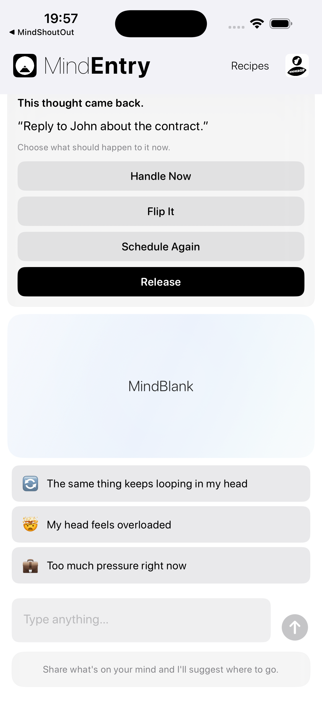
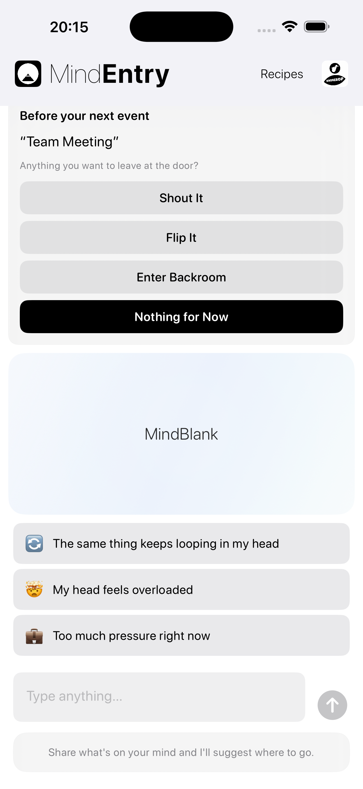

A quiet prompt before thought friction takes hold.
MindPreCog is the context-aware layer of MINDBEBOP.
It notices meaningful moments — when a thought returns, keeps returning, morning begins, bedtime approaches, a week closes, a meeting is about to begin, or a demanding context is approaching — and offers the right structural pathway.
Instead of waiting for you to realize you need help, MindPreCog gently surfaces the right tool at the right time.
No analysis. No interpretation. No diagnosis. Just a timely invitation to reduce thought friction before it builds.
Most apps wait for you to ask for help. MindPreCog offers structure before you think to ask.
These moments become quiet opportunities to respond differently.
Context-aware prompts, not mind reading.
MindPreCog does not analyze your thoughts.
It responds to simple signals such as:
When one of these moments occurs, MindEntry can open and offer the most relevant next step.
That might mean shouting a thought, flipping it, scheduling it again, entering Backroom, zoning out, releasing it, reviewing what kept returning, or simply doing nothing.
In the morning, MindEntry can ask:
What deserves your attention today?
At bedtime, MindEntry can ask:
Anything you want to set aside for tomorrow?
Once a week, MindEntry can ask:
What keeps returning lately?
Before a meeting, MindEntry can ask:
Anything you want to leave at the door?
Or, when a reminder has returned several times:
This thought keeps coming back.
You can choose MindShoutOut, MindFlipOut, MindZoneOut, MindBackOut, or release the thought.
A small amount of mental friction is removed before it has a chance to grow.
A quiet overview of what kept asking for attention.
Weekly MindPreCog gives you a simple local overview of the past 7 days.
It can show counts such as returned thoughts, repeated returns, prompts shown, and structural responses used.
It does not show thought contents, calendar titles, emotional labels, scores, or interpretations.
Just a quiet view of what kept returning.
MindPreCog simply notices meaningful moments and offers structure when it may be useful.


MindPreCog prompts are shown inside MindEntry.
Over time, MindPreCog may expand to include additional context-aware prompts.
Most mental tools are reactive.
You notice a problem, then decide what to do.
MindPreCog shortens that gap.
It offers a structural option just before thought friction has a chance to grow, and a quiet weekly view of what kept returning.
MindPreCog does not try to understand your mind. It simply arrives a little earlier — and once in a while, helps you notice what kept returning.